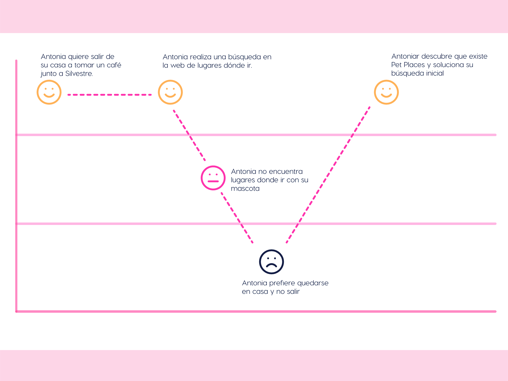
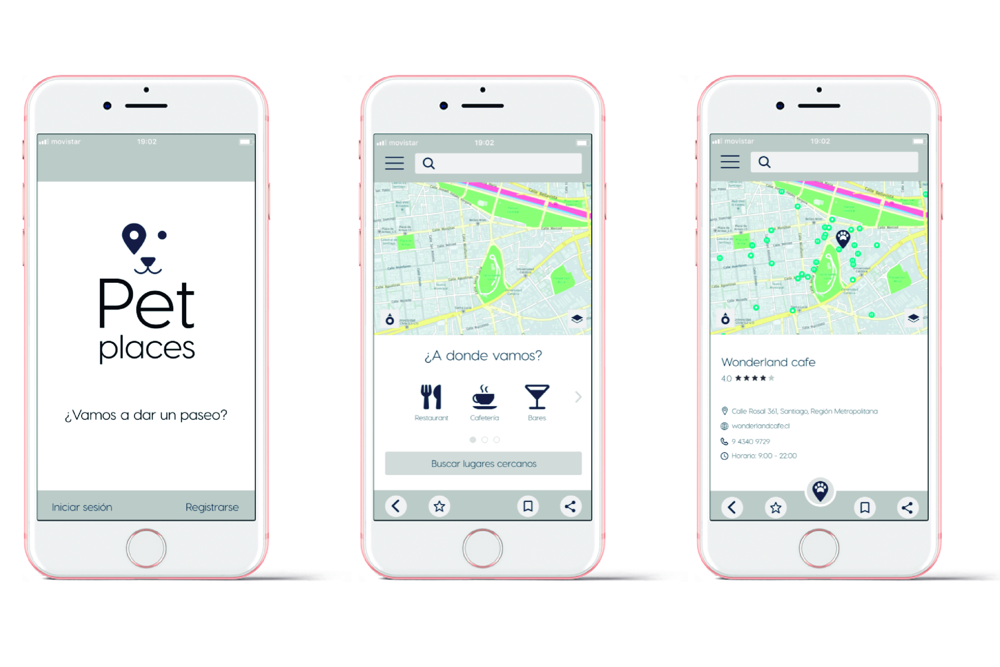

América Solidaria
El desafío de este proyecto consistía en diseñar un modelo de fidelización de socios de América Solidaria que sea vinculante con la causa y con el territorio.
Por lo tanto, es necesario conocer las motivaciones, percepciones y expectativas que tienen los socios de América Solidaria con la fundación y generar una propuesta que sea relevante y diferenciadora.
Rol
- User Research
- Interaction Design
- Visual Design
- Prototyping
Research
“Muchas veces no quiero ir a lugares donde no es aceptada”
“Que sean incluidos en la vida”
“Siento que me ayuda mucho con su amor incondicional”
Este proyecto se enfocó en el diseño de servicios, por lo tanto el espectro de investigación se amplía considerablemente.
User persona

Antonia ha buscado muchas alternativas para mitigar estos síntomas y a logrado descubrir que existe un tratamiento que jamás pensó que la ayudaría tanto, su perro “Silvestre”.
Los perros de soporte emocional son piezas claves para personas con este tipo de trastornos adaptativos, actualmente están siendo “recetados” a pacientes que tengan esta conexión con sus mascotas y que efectivamente resulten una contención emocional para ellos.
Esta terapia está tomando fuerza y los pacientes encuentran una oportunidad en ella, lamentablemente esta práctica no está regulada por ley y no forma parte en aspectos de movilidad e inclusión en la ciudad.
Journey de Antonia
Es en este viaje de Antonia donde confirmé que efectivamente, la oportunidad de mejora está declarada por el dolor que tiene al no encontrar un lugar donde ir con Silvestre y decide quedarse en casa.

Por lo tanto, es aquí donde nosotras hacemos nuestra intervención y aporte a esta necesidad. Digo nosotras porque trabajé en conjunto con un grupo de Desarrolladoras Front -End con quienes tuvimos la oportunidad de proyectar esta APP.
Propuesta
Pet Places es una APP que entregará información de lugares en tiempo real, donde Antonia podrá ir con Silvestre cuando ella quiera de forma segura para ambos.
El diseño de la APP tiene lineamientos que establecí en las primeras etapas de research y definición donde realicé entrevistas a usuarios, benchmark, user persona y customer journey map.
El diseño de la APP tiene lineamientos que establecí en las primeras etapas de research y definición donde realicé entrevistas a usuarios, benchmark, user persona y customer journey map.
Realizada la síntesis y definidos los lineamientos comencé a diseñar las pantallas de la APP.
Con los primeros wireframes comencé a definir el wireflow de la app y cómo serían las interacciones que Antonia tendría con el producto.

La definición de la paleta de color, tipografías, iconos y elementos de interfaz, los elegí en función de la esencia del producto, la que debía ser cercana, alegre e intuitiva. Para lograr esto busqué referentes y extraje las mejores prácticas de ellos.
Prototipo de alta definición

¿Por qué Pet Places?
Pet places es una app con personalidad y se caracteriza por 3 puntos que consideré para una futura proyección del negocio.